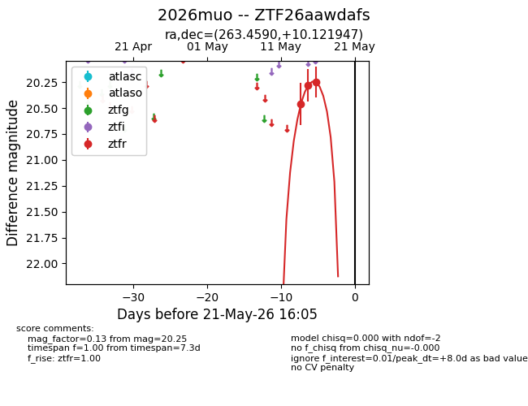
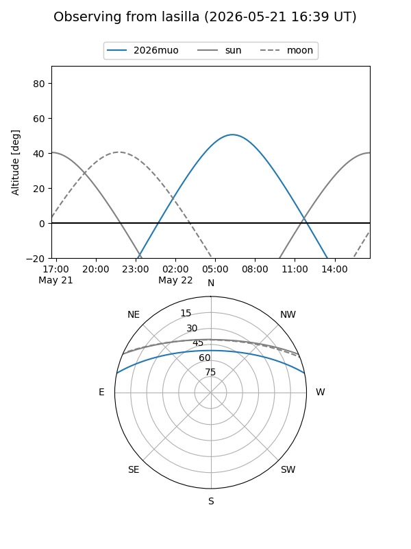
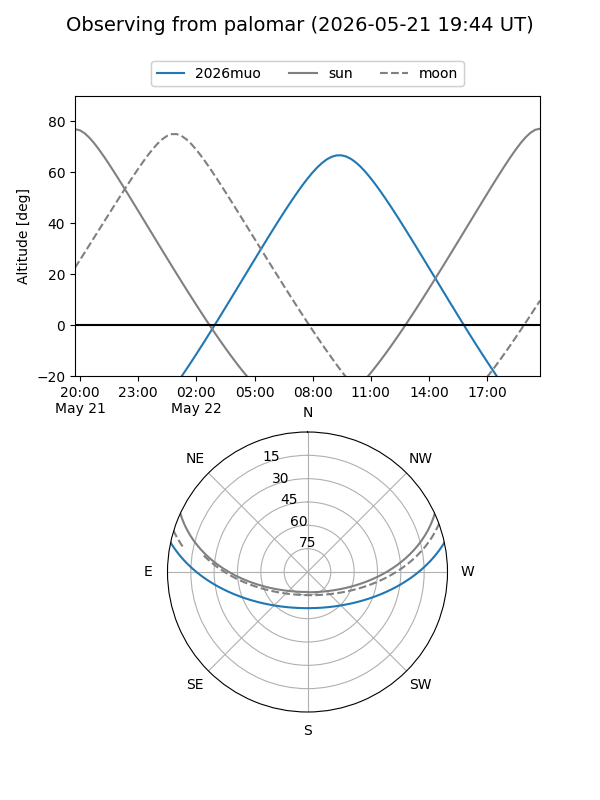
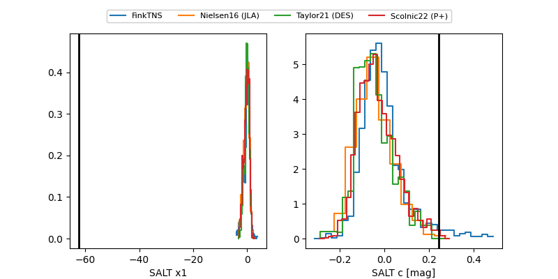

2026muo
Target 2026muo at 2026-05-21 16:07
Aliases and brokers:
lsst-FINK: link
lsst-Lasair: link
lsst-ALeRCE: link
ztf-FINK: link
ztf-Lasair: link
ztf-ALeRCE: link
TNS: link
YSE: link
alt names
ZTF26aawdafs (ztf,fink_ztf)
2026muo (tns,yse)
Coordinates:
equatorial (ra, dec) = 263.4590,+10.12195
equatorial (HMS+DMS) = 17:33:50.16,+10:07:19.01
galactic (l, b) = (33.3826,+21.78729)
Flags:
Photometry:
last ztfr=20.25
3 ztfr detections
Lightcurve

Visibility


Additional plots
